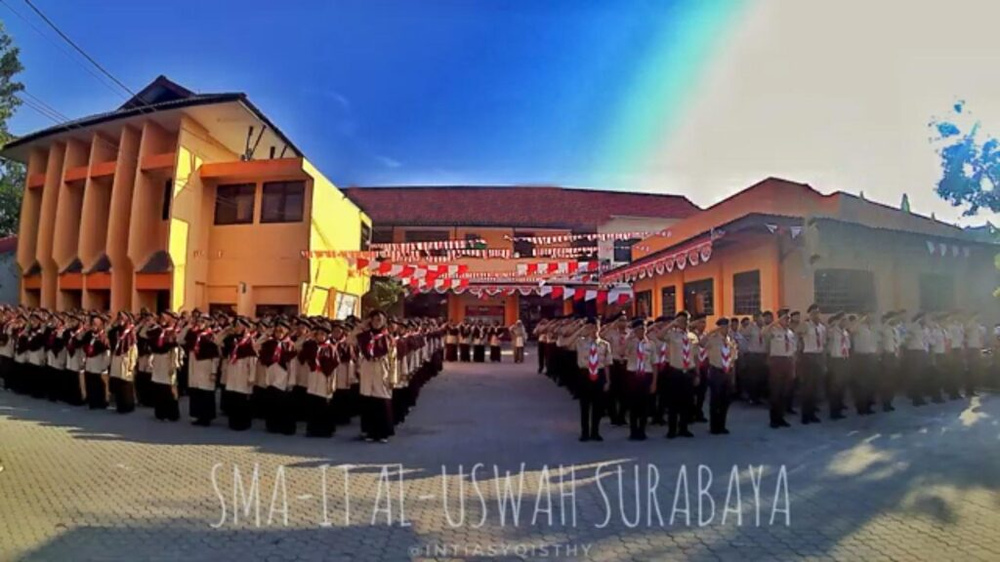

Sekolah Islam Terpadu (SIT) Al Uswah Surabaya merupakan lembaga pendidikan yang berada di bawah Yayasan Ukhuwah Islamiyah Surabaya. Sekolah ini mengintegrasikan Kurikulum Khas SIT dengan kurikulum nasional. Sekolah ini menjadikan pembelajaran Al Quran sebagai program unggulan, yang selalu berusaha meningkatkan kompetensi peserta didiknya, sehingga berprestasi di bidang akademis maupun non akademis. Yayasan Ukhuwah Islamiyah mengelola unit sekolah, yaitu: SDIT Al Uswah, SD Al Uswah 2, SMPIT Al Uswah, dan SMAIT Al Uswah Surabaya. Di samping mengelola unit sekolah, Yayasan juga memiliki Pusat Pendidikan & Pelatihan (Pusdiklat), Unit Layanan Zakat Uswah Amanah, Taman Anak Muslim, dan beberapa unit usaha seperti: KSPPS Syirkah Permata Ukhuwah, Koperasi Al Uswah, dan Uswah Catering
Akhir kata, kami berharap seluruh siswa dapat terus belajar dengan tekun, menjaga semangat, serta mengembangkan potensi dan karakter positif dalam setiap langkahnya. Kepada para orang tua, kami mengucapkan terima kasih atas dukungan dan kerja sama yang telah diberikan, dan semoga sinergi antara sekolah dan keluarga dapat terus terjalin demi keberhasilan dan masa depan anak-anak kita. Semoga kita semua senantiasa diberikan kesehatan, kemudahan, dan keberkahan dalam setiap usaha yang kita lakukan.
Kepala Sekolah SMAIT Al-Uswah Surabaya
